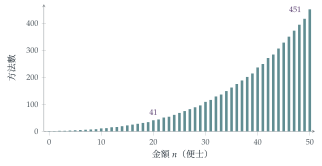

STEP I 1997，第 1 題
繼續之前，請先閱讀題目（原題為英文）。題目載於 STEP Support Programme 的題目資料庫： step.maths.org/questions/97-s1-q1
引子
這看來是全書最容易的一題：把所有可能逐一列出便是。可是列舉很快就會失控。用英國人口袋裏的硬幣，湊出 \(20\)p 有 \(41\) 種方法，湊出 \(50\)p 有 \(451\) 種，湊出 £1 更有 \(4563\) 種。這道題真正要求的是一套系統，也就是一種整理計數的方法，使得既無遺漏，亦無重複。
這套系統背後是一段優美的數學。每種硬幣對應一個等比級數（geometric series），湊出 \(n\) 便士的方法數就是這些級數之積的一個係數（coefficient）；把同一個想法一併用於所有正整數，便得到歐拉（Euler）的分拆（partition）理論，那是數論中最深刻的課題之一。
動筆之前
只用 \(2\)p 和 \(1\)p 硬幣，湊出 \(n\) 便士有多少種方法？為甚麼答案只取決於你用了多少枚 \(2\)p 硬幣？
一旦選定 \(2\)p 硬幣的數目，其餘的就必須全是 \(1\)p 硬幣，所以 \(2\)p 硬幣的每個可能數目 \(0, 1, \ldots, \lfloor n/2\rfloor\) 都恰好對應一種方法。這樣共有 \(\lfloor n/2\rfloor + 1\) 種方法，記作 \(a(n)\)。例如 \(a(10) = 6\)，\(a(5) = 3\)。
逐步解題
階段 1 十便士
按面值最大的硬幣來整理計數。你可以用多少枚 \(10\)p 硬幣？定下來之後，又可以用多少枚 \(5\)p 硬幣？
一枚 \(10\)p 硬幣：\(1\) 種方法。
不用 \(10\)p，用兩枚 \(5\)p：\(1\) 種方法。
不用 \(10\)p，用一枚 \(5\)p：餘下的 \(5\)p 由 \(2\)p 和 \(1\)p 湊成，有 \(a(5) = 3\) 種方法。
不用 \(10\)p 也不用 \(5\)p：\(10\)p 全由 \(2\)p 和 \(1\)p 湊成，有 \(a(10) = 6\) 種方法。
總數是 \(1 + 1 + 3 + 6 = 11\)。■
階段 2 逐層建立
設 \(b(n)\) 為用 \(5\)p、\(2\)p 和 \(1\)p 硬幣湊出 \(n\) 便士的方法數。怎樣用函數 \(a\) 表示 \(b(n)\)？
選定 \(5\)p 硬幣的數目 \(k\)；餘下的 \(n - 5k\) 便士由 \(2\)p 和 \(1\)p 硬幣湊成。所以 \[b(n) = a(n) + a(n - 5) + a(n - 10) + \cdots.\] 由此得
| \(n\) | \(0\) | \(5\) | \(10\) | \(15\) | \(20\) |
|---|---|---|---|---|---|
| \(a(n)\) | \(1\) | \(3\) | \(6\) | \(8\) | \(11\) |
| \(b(n) = a(n) + b(n - 5)\) | \(1\) | \(4\) | \(10\) | \(18\) | \(29\) |
同樣地，設 \(c(n)\) 為連 \(10\)p 硬幣也可使用時的方法數；則 \(c(n) = b(n) + b(n - 10) + \cdots\)，所以 \(c(10) = 10 + 1 = 11\)（與第 1 階段的結果一致），而 \(c(20) = b(20) + b(10) + b(0) = 29 + 10 + 1 = 40\)。
階段 3 二十便士
最後輪到 \(20\)p 硬幣：我們要麼用它（一種方法），要麼不用（\(c(20)\) 種方法）。所以共有 \[40 + 1 = 41 \text{ 種方法}. \qed\]
留意當中的結構：每加入一種新硬幣就多一層，而每一層都是把上一層按新硬幣的面值為間隔取值再相加。你能看出電腦會怎樣為 £1 甚至 £100 進行這項計算嗎？
回顧
按最大的部分來整理。先固定面值最大的硬幣的數目，計數便有條不紊。
建立表格。每加入一種新硬幣，就多出一行，由上一行計算出來。這就是動態規劃（dynamic programming），是電腦計算這類數目的標準方法。
與已知的情況核對。表格重現了 \(10\)p 的 \(11\) 種方法。
背後的數學
把硬幣看成等比級數
以下這個想法把問題化為代數。所用 \(5\)p 硬幣的數目可以是 \(0, 1, 2, \ldots\)，分別貢獻 \(0, 5, 10, \ldots\) 便士。把這一點記錄成級數 \[1 + x^5 + x^{10} + x^{15} + \cdots = \frac{1}{1 - x^5}.\] 對每種硬幣都這樣做，然後相乘： \[\frac{1}{(1 - x)(1 - x^2)(1 - x^5)(1 - x^{10})(1 - x^{20})} = \sum_n w(n)x^n.\] 把各括號乘開時，每一項 \(x^n\) 都來自在每個括號中各選一項，也就是為每種硬幣各選一個數目，而總值為 \(n\)。所以 \(x^n\) 的係數 \(w(n)\) 正好就是湊出 \(n\) 便士的方法數。第 2 階段的表格，其實就是把這個乘積逐個括號乘開。這正是 第 9.4 節 中母函數（generating function）的想法，而乘法正是它大顯威力之處：母函數之積所計算的，就是各項選擇的組合數目。

分拆
假如每個正整數都可以作為硬幣的面值，又會怎樣？這時，不計次序而把 \(n\) 寫成正整數之和的方法數，就是分拆數（partition number）\(p(n)\)。例如 \(p(4) = 5\)，因為 \(4 = 3 + 1 = 2 + 2 = 2 + 1 + 1 = 1 + 1 + 1 + 1\)。歐拉在 1748 年看出 \[\sum_{n \geq 0}p(n)x^n = \frac{1}{(1 - x)(1 - x^2)(1 - x^3)(1 - x^4)\cdots},\] 並用它發現了一些非凡的恆等式（identity）。其中之一是：把 \(n\) 寫成互不相同的部分之和的方法數，等於把它寫成奇數部分之和的方法數。（用母函數來證明，只需一行代數：請在練習中一試。）
分拆數增長得很快：\(p(10) = 42\)，\(p(100) = 190\,569\,292\)。1918 年，哈代（G. H. Hardy）與拉馬努金（Srinivasa Ramanujan）為 \(p(n)\) 找到一條令人驚歎的公式，那是一個無窮級數（infinite series），其首項為 \[p(n) \approx \frac{1}{4n\sqrt3}\,e^{\pi\sqrt{2n/3}}.\] 為了檢驗這條公式，Percy MacMahon 利用歐拉的恆等式，徒手算出 \(p(200) = 3\,972\,999\,029\,388\)。哈代與拉馬努金的級數只取首幾項，所得結果與正確答案相差不足一。拉馬努金還發現 \(p(5n + 4)\) 必定可被 \(5\) 整除，\(p(7n + 5)\) 必定可被 \(7\) 整除，而 \(p(11n + 6)\) 必定可被 \(11\) 整除。至於為何再沒有其他這類規律，則要到二十一世紀才得到解釋。
思維技巧
當一個對象由若干獨立的選擇構成時，每項選擇就是一個因式，而總大小為 \(n\) 的對象的數目，就是乘積中 \(x^n\) 的係數。
這把計數化為代數。在大學裏，它是計數組合學（enumerative combinatorics）的基礎，而概率母函數（probability generating function）也正是這樣處理獨立隨機變量（independent random variables）之和的。
延伸練習
兩種六。試做 STEP II 2012，第 1 題。該題利用等比級數之積來計數。做完之後，請描述一個以這些係數為答案的硬幣計數問題。
互異與奇數。證明 \((1 + x)(1 + x^2)(1 + x^3)\cdots\) 是分拆成互不相同部分的母函數。利用 \(1 + x^k = \frac{1 - x^{2k}}{1 - x^k}\) 證明它等於 \(\frac{1}{(1 - x)(1 - x^3)(1 - x^5)\cdots}\)，並由此推出歐拉定理。就 \(n = 6\) 驗證這個結果。
一條公式。證明只用 \(1\)p、\(2\)p 和 \(5\)p 硬幣湊出 \(n\) 便士的方法數，是最接近 \(\frac{(n + 4)^2}{20}\) 的整數。（先用較小的 \(n\) 驗證。）
次序有別。把 \(1\)p 和 \(2\)p 硬幣逐枚投入投幣口來湊出 \(n\) 便士，若次序有別，共有多少種方法？（這個數列（sequence）你以前見過。）
延伸閱讀
George Andrews & Kimmo Eriksson, Integer Partitions（Cambridge University Press）。一本為大學本科生而寫的入門書，篇幅短小，淺白易讀。
波利亞（George Pólya），「On picture-writing」，American Mathematical Monthly 63 (1956)。波利亞以兌換一美元的問題（共有 \(292\) 種方法）來講解母函數的經典文章。
Robert Kanigel, The Man Who Knew Infinity（Abacus）。拉馬努金的生平，以及他與哈代的合作。